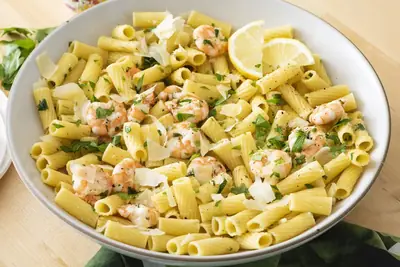

Lemon Shrimp Pasta

Ingredients
- 1 tablespoon + 1/4 teaspoon kosher salt
- 1 pound rigatoni or favorite shaped pasta
- 1 pound large raw shrimp, peeled and deveined (I used frozen shrimp that I defrosted)
- 2 tablespoons olive oil
- 2 garlic cloves, minced
- 1 cup clam juice
- 1 tablespoon lemon juice
- 1 tablespoon butter
- 2 tablespoons parsley, chopped (+ more for sprinkling)
Steps
- In a large pot, bring 4 quarts of water plus 1 tbsp of salt to a boil.
- Cook the pasta according to package directions and drain reserving 1 cup of the pasta water.
- While pasta cooks, heat 2 tbsp of the olive oil in a large saute pan over medium heat.
- Place the shrimp, garlic and 1/4 tsp salt in a saute pan and cook for 3 minutes, stirring halfway through (make sure not to overcook the shrimp).
- Remove the shrimp to a plate and add the clam juice into the same saute pan.
- Bring the clam juice to a boil for 5 minutes or until the liquid is reduced by half.
- Whisk the butter, lemon juice and parsley into the saute pan and add the pasta, shrimp and as much of the reserved pasta water as necessary to make a sauce to coat the pasta.
- Top with additional parsley or grated cheese if desired.
Recipe by Weelicious, from Weelicious. Saved here for personal use; the original has the full notes, tips and photos. Open original